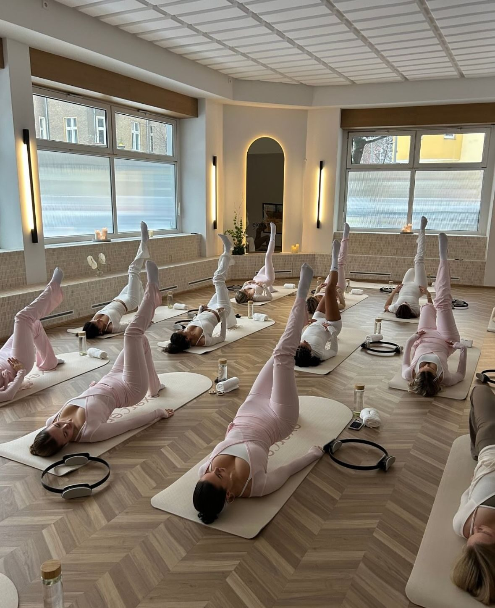
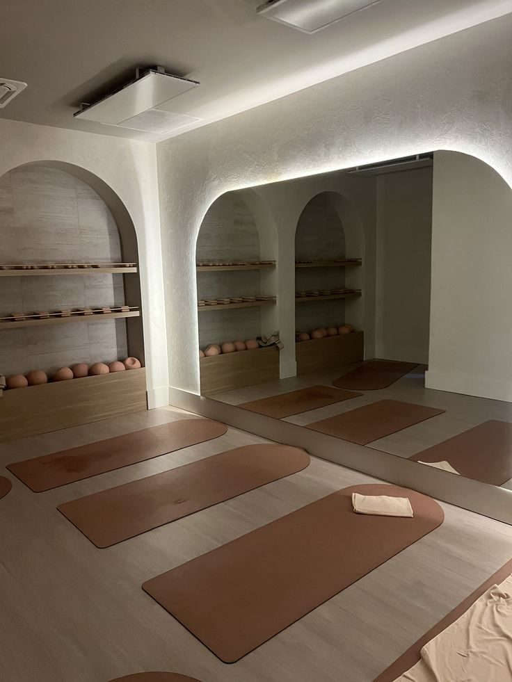
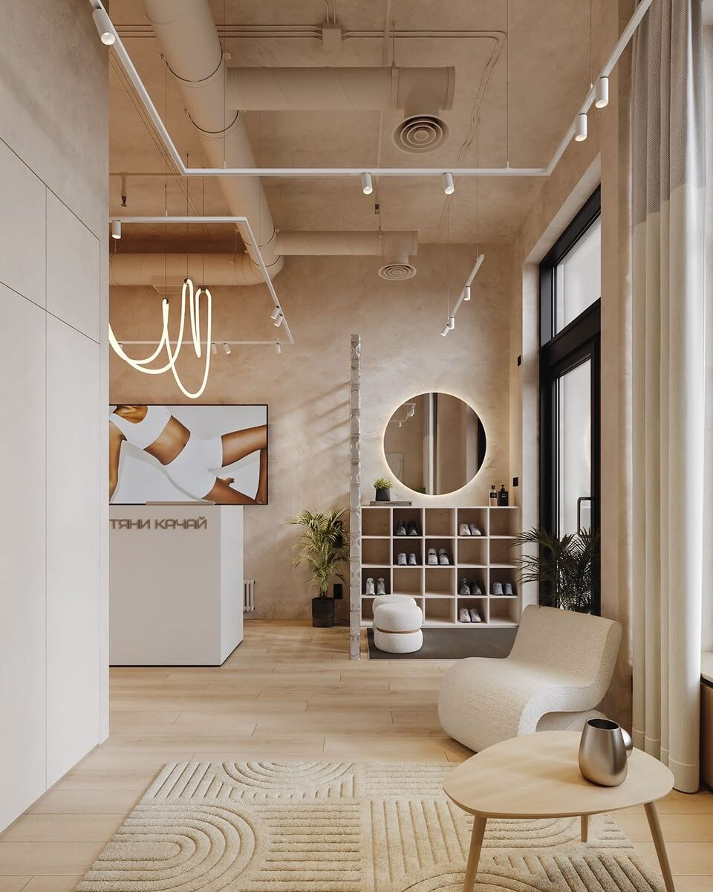

Espacios · 2026
AURA Pilates Studio
Sitio responsive para un estudio de pilates ficticio con servicios, galería, información práctica y reservas.

Contexto
Transmitir el espacio
El proyecto final previo al portfolio consistía en presentar un espacio físico y añadir interactividad básica con JavaScript.
AURA se planteó como un estudio sereno, centrado en grupos reducidos, bienestar y atención personal.
Proceso
Contenido e interacción
La información se organizó en presentación, valores, clases, galería, horarios y reserva. Se añadieron pestañas para las modalidades y validación para el formulario.


Resultado
Una web completa
El resultado reúne HTML semántico, layout responsive y JavaScript sencillo en una página coherente con la identidad del espacio.
Ficha técnica
- Año: 2026
- Asignatura: Diseño Web
- Herramientas: HTML, CSS y JavaScript
- Tipo: Proyecto académico ficticio